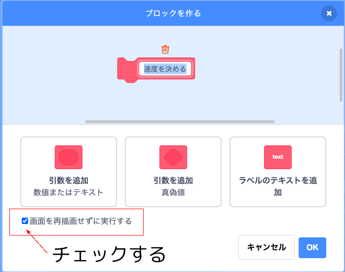
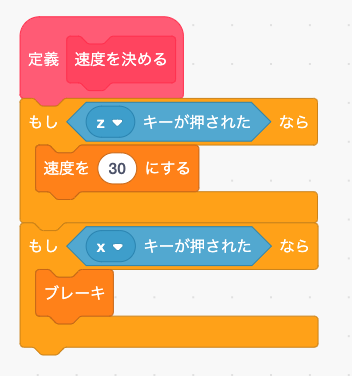
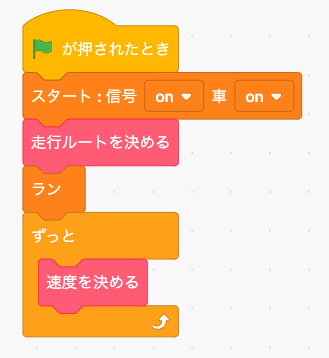
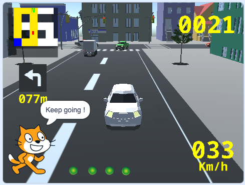

速度もいきなり自動で変更するブログラムを作るのはむずかしいので、まずはキーボードを使ってマニュアルで速度を決めるプログラムを作りましょう。
※ 走行画面は動作が重いので、プログラミングはストップボタンを押してからタイトル画面でしてください。
まず「ブロック定義」メニューで「速度を決める」というオリジナルブロックを作ります。 なお「速度を決める」ブロックは繰り返し実行されるブロックなので、ブロックを作る時に「画面を再描画せずに実行する」をチェックします。
この「速度を決める」ブロックの中身は次のようにします。
「緑の旗」を押した時に実行するメイン・プログラムは次のように変更します。
では「緑の旗」ボタンを押してテストしてみましょう。 Zキーを押すと時速30キロで走り、Xキーを押すと止まります。
正しく動いたら「ストップ」ボタンを押してタイトル画面に戻って下さい。
チャレンジ
「視点〜」ブロックを使うと視点を切り替えることが出来ます(4種類)。 下の画像の様にスプライト機能を使って画面の下にボタンを4つ追加し、各ボタンを押したら視点が切り替わるようなプログラムをつくってみましょう。
